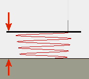

<div id="rampClearanceHeight"><p>らせんランプが開始するトップ高さより上の移動高さです。</p>
<table class="tipTable" cellspacing="10">
<tr>
<td><center></center></td>
</tr><tr>
<td><center><p><b>らせんを開始する移動高さ</b></p></center></td>
</tr></table>
</div>